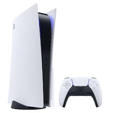
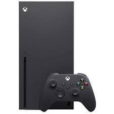
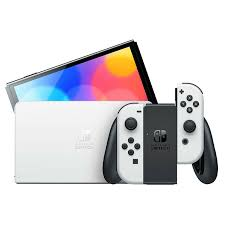

Consolas de Juegos de Última Generación
Las consolas de videojuegos de última generación ofrecen experiencias de juego más rápidas y visualmente impresionantes. A continuación, analizamos los modelos más populares: PS5, Xbox Series X y Nintendo Switch.
PlayStation 5

La PlayStation 5 es la última consola de Sony, equipada con hardware de vanguardia, incluyendo una GPU personalizada, un disco duro SSD ultra rápido y soporte para Ray Tracing. Ha sido diseñada para ofrecer una experiencia de juego más fluida y visualmente impresionante.
- Pantalla: 4K hasta 120Hz, 8K
- Almacenamiento: 825GB SSD
- Procesador: AMD Ryzen Zen 2
- Exclusivas: Demon’s Souls, Ratchet & Clank: Rift Apart, Returnal
Xbox Series X

La Xbox Series X es la consola más potente de Microsoft, con un rendimiento superior en cuanto a gráficos y velocidad. Ofrece juegos en resolución 4K a 120fps y cuenta con compatibilidad con miles de juegos de generaciones anteriores.
- Pantalla: 4K hasta 120Hz
- Almacenamiento: 1TB SSD
- Procesador: AMD Ryzen Zen 2
- Exclusivas: Halo Infinite, Forza Horizon 5, Fable (Próximamente)
Nintendo Switch OLED

La Nintendo Switch es la consola híbrida de Nintendo, que ofrece la opción de jugar tanto en el televisor como en modo portátil. La versión OLED mejorada proporciona una pantalla más vibrante y un diseño más cómodo.
- Pantalla: 7” OLED
- Almacenamiento: 64GB
- Procesador: NVIDIA Tegra X1
- Exclusivas: The Legend of Zelda: Breath of the Wild, Animal Crossing: New Horizons
Comparativa entre las Consolas
Las tres consolas tienen su propio enfoque y ventajas. Mientras que la PS5 y Xbox Series X ofrecen un rendimiento gráfico de última generación, la Nintendo Switch destaca por su portabilidad y una biblioteca de juegos única.